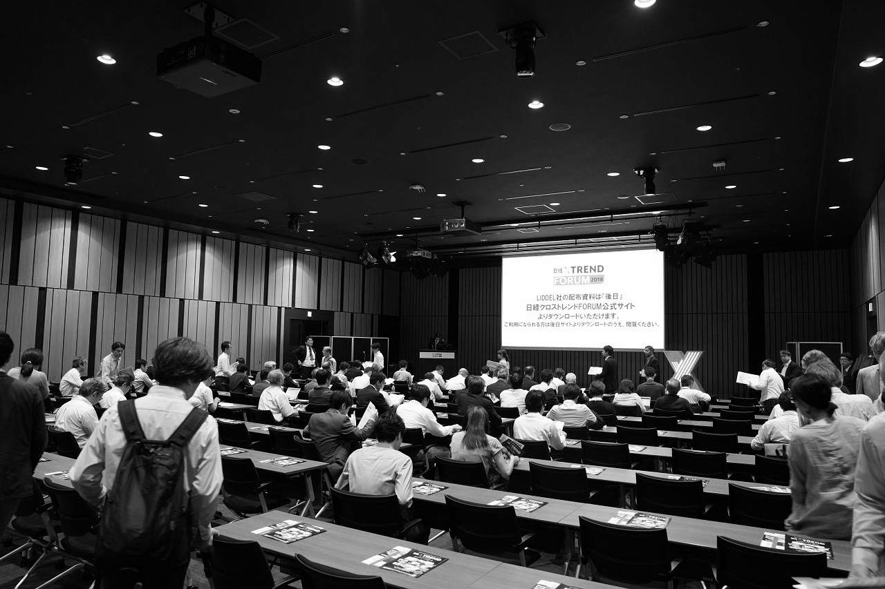

日経クロストレンド FORUM 2019は終了いたしました。
多数のご来場ありがとうございました。
デジタルイノベーションの最新トレンドと
ビジネス課題解決のヒントがここに！
主催 日経BP（日経クロストレンド）
会期 2019年7月24日（水）～25日（木）
会場 赤坂インターシティコンファレンス
受講料 全セッション無料
注目セッション
- 7.24
C-142
大企業が挑む、同時多発イノベーションの「進め方」
ニチレイ 経営企画部 事業開発グループ マネージャー 関屋 英理子 氏
電通デジタル デジタルトランスフォーメーション部門 サービスマーケティング事業部 サービスデザイングループ グループマネージャー 加形 拓也 氏
- 7.24
C-161
CX（顧客体験）に向き合う経営を。事例と実践方法をご紹介。
プレイド Business Accelerator 金田 拓也 氏
- 7.24
S-172
メルカリ✕メルペイで進めるキャッシュレス ～スマホ決済での挑戦とその先の未来とは～」
メルペイ 執行役員CBO 山本 真人 氏
- 7.25
C-201
顧客体験起点のデジタルトランスフォーメーション
電通デジタル デジタルトランスフォーメーション部門 部門長補佐 ビジネス／UXデザイン事業部長 小浪 宏信 氏
- 7.25
C-241
5GとIoT時代の先へ。企業が今こそ手に入れるべきモバイルの力
App Annie 日本代表ディレクター 向井 俊介 氏
- 7.25
C-252
ビッグデータ×AI×グローバルアプリ動画広告プラットフォームイスラエル企業YouAppiの実力
Atlas Associates 代表取締役／YouAppi Adviser 宮野 貴行 氏
YouAppi ジャパンカントリーマネージャー 中林 由恵 氏
講師紹介
7.25
K-201
ワークマン
専務取締役開発本部担当
土屋 哲雄 氏
7.25
C-201
電通デジタル
デジタルトランスフォーメーション部門 部門長補佐 ビジネス／UXデザイン事業部長
小浪 宏信 氏
7.25
C-211
コーセー
宣伝部 宣伝企画・PR課 課長
小林 祐樹氏
7.25
C-211
グーグル
YouTube プロダクトマーケティングマネージャー
中村 全信氏
7.25
C-211
サムスン電子ジャパン
モバイルコミュニケーション マーケティンググループ シニアプロフェッショナル / 課長
荻原 泰邦 氏
7.25
S-273
D4DR
代表取締役社長
藤元 健太郎 氏
7.25
S-273
DeNA
CHO室室長代理 東京大学医学部附属病院 22世紀医療センター 研究員
平井 孝幸 氏
7.25
S-273
経済産業省
ヘルスケア産業課長
西川 和見 氏
7.25
S-272
顧客時間
チーフプランナー・広報統括
風間 公太 氏
7.25
S-272
ピースオブケイク noteプロデューサー／ブロガー
アジャイルメディア・ネットワーク アンバサダー／ブロガー
徳力 基彦 氏
7.25
S-271
キリンビール
マーケティング部 新規事業創造担当 HomeTapチームリーダー
山口 洋平 氏

7.25
C-263
ソニーマーケティング
コミュニケーションデザイン部 マーケティングマネジャー
橋本 好真 氏
7.25
C-263
クー・マーケティング・カンパニー
代表取締役
音部 大輔 氏
7.25
C-262
パナソニック
コミュニケーション部
清水 孝志 氏

7.25
C-262
オールアバウト
プラットフォーム開発部 マネジャー
大和田 誠 氏
7.25
C-261
Payke
代表取締役CEO
古田 奎輔 氏

7.25
S-255
【審査員代表】クー・マーケティング・カンパニー
代表取締役
音部 大輔 氏
7.25
S-255
ワークマン
専務取締役開発本部担当
土屋 哲雄 氏
7.25
S-255
20世紀フォックス映画
マーケティング本部 本部長
星野 有香 氏
7.25
S-255
20世紀フォックス映画
マーケティング本部
シニア マネージャー柳島 尚美 氏
7.25
S-255
PayPay
マーケティング本部 本部長
藤井 博文 氏
7.25
S-255
ライオン
ブランドマネージャー
宮川 孝一 氏
7.25
S-255
セブン-イレブン・ジャパン
マーチャンダイザー
子出藤 優 氏
7.25
C-253
NTTコミュニケーションズ ICTコンサルティング本部
担当課長/シニアコンサルタント
杉井 達朗 氏
7.25
C-252
Atlas Associates 代表取締役
YouAppi Adviser
宮野 貴行 氏
7.25
C-252
YouAppi
ジャパンカントリーマネージャー
中林 由恵 氏
7.25
C-251
NRIネットコム
デジタルマーケティング事業部主任
山川 俊哉 氏
7.25
C-243
テクノスデータサイエンス・エンジニアリング
取締役 執行役員副社長
小関 高行 氏
7.25
C-242
グーグル
クリエイティブ デベロップメント リード
深海 孝二郎 氏
7.25
C-242
電通
第4CRプランニング局 グループ・クリエーティブ・ディレクター
笠間 健太郎 氏
7.25
C-241
App Annie
日本代表ディレクター
向井 俊介 氏
7.25
S-233
青山学院大学 /地球社会共生学部 教授
マップコンシェルジュ / 代表取締役
古橋 大地 氏
7.25
S-233
アクセルスペース
代表取締役社長CEO
中村 友哉 氏
7.25
S-233
RESTEC
ソリューション事業第一部 事業戦略室 参事
奥村 俊夫 氏
7.25
S-233
Maxar Technologies
Senior Sales Manager, Commercial Sales, Japan, APAC
竹田 宏之 氏
7.25
S-232
Jリーグデジタル
代表取締役社長
出井 宏明 氏
7.25
S-231
Zuora Japan
代表取締役社長
桑野 順一郎 氏
7.25
S-231
favy
代表取締役社長
高梨 巧 氏
7.24
K-101
ゴールドウイン
副社長
渡辺 貴生 氏
7.24
C-101
ビービット
執行役員/エバンジェリスト
宮坂 祐 氏
7.24
C-111
ブライアリー・アンド・パートナーズ・ジャパン
代表取締役社長
川津 のり 氏
7.24
S-131
トヨタ自動車
未来プロジェクト室主任
間嶋 宏 氏
7.24
S-132
ファミリーマート
経営企画本部デジタル戦略部長
植野 大輔 氏
7.24
S-133
NTTドコモ
5G・IoTソリューション推進室 担当部長
有田 浩之 氏
7.24
C-141
博報堂
マーケティングシステムコンサルティング局 プロセスコンサルティング部 部長 ストラテジックプラニングディレクター
荒井 友久 氏
7.24
C-142
ニチレイ
経営企画部 事業開発グループ マネージャー
関屋 英理子 氏
7.24
C-142
電通デジタル
デジタルトランスフォーメーション部門 サービスマーケティング事業部 サービスデザイングループ グループマネージャー
加形 拓也 氏
7.24
C-143
Penguin Tokyo
共同創業者+代表取締役
関根 佑輔 氏
7.24
C-143
Penguin Tokyo
共同創業者+取締役副社長
勅使川原 晃司 氏
7.24
S-145
マーケターキャリア協会(MCA)理事
富永 朋信 氏
7.24
S-145
インサイトフォース
代表取締役
山口 義宏 氏
7.24
C-151
ホットリンク
執行役員CMO
飯髙 悠太 氏
7.24
C-152
ヴァリューズ
執行役員
子安 亜紀子 氏

7.24
C-152
ヴァリューズ
データマーケティング局 兼 事業企画局 アシスタントマネジャー
岩村 大輝 氏

7.24
C-153
アクイアジャパン
リージョナルパートナーマネージャー
小坂 慎吾 氏

7.24
C-161
プレイド
Business Accelerator
金田 拓也 氏
7.24
C-162
Yappli
執行役員 CCO 兼 エバンジェリスト
金子 洋平 氏
7.24
S-163
KDDI
ビジネスIoT企画部長
原田 圭悟 氏
7.24
S-171
ROOTS Mobility Japan
代表
安永 修章 氏

7.24
S-172
メルペイ
執行役員CBO
山本 真人 氏
7.24
S-173
ソフトバンク
モバイルネットワーク本部 本部長
野田 真 氏
日経クロストレンド FORUM 2019は、日経クロストレンド会員向けの無料カンファレンスイベントです。現在、会員でない方でも受講登録をするだけで、ご参加いただけます。
開催概要
デジタル技術が急速に進化し、消費行動は一変、企業戦略も見直しが迫られています。
トレンドが目まぐるしく変化する今だからこそ、業種や職種などの垣根を越えて、「変化」を捉え続けることがとても重要です。
そのような時代の中、未来を予測し、マーケティング／デジタル戦略の深堀り記事を日々お届けしている日経クロストレンドが主催する当イベントは、デジタルイノベーションの最新トレンドを体感いただき、ビジネスの最前線における課題解決のヒントを提供する場を創出します。
【会期】2019年7月24日（水）～25日（木）
【場所】赤坂インターシティコンファレンス（東京・溜池山王）
【主催】日経BP（日経クロストレンド）



アクセス
赤坂インターシティコンファレンス
〒107-0052 東京都港区赤坂１丁目８−１ 赤坂インターシティAIR 3F・4F